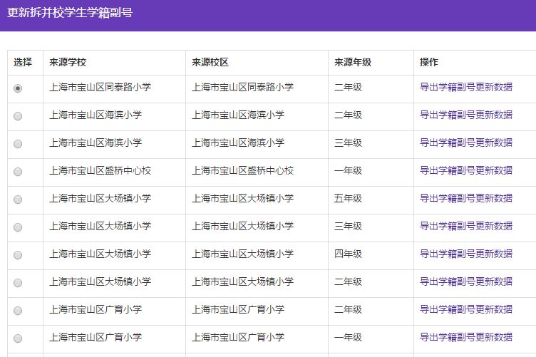
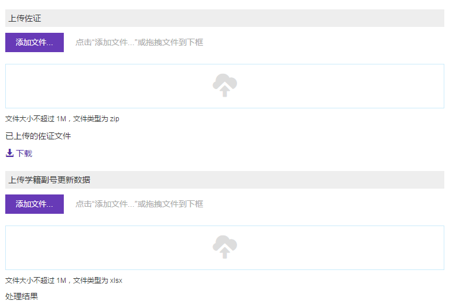

更新拆并校学生学籍副号
功能描述
如果区管理员在拆并校操作中选择“需更新学生学籍副号”，则并入学校管理员需对这批学生更新学籍副号
操作步骤 （测试版中尚未做 截图缺！）
第一步，学籍信息管理->学生学籍信息管理。
第二步，点击“更新拆并校学生学籍副号”。
第三步，导出学生信息数据。
第四步，编辑导出文件中的“新学籍副号”列。
第五步，导入更新后的文件，提供佐证，选择对应的更新来源。
第六步，提交。
第七步，校验数据。
- 校验上传的学生数据是否与导出的一致，除新学籍副号外其他内容不允许变动，新学籍副号是否符合规则，且不重复。如校验通过且更新成功，系统解除这些学生的锁定，可以对这些学生做其他业务。